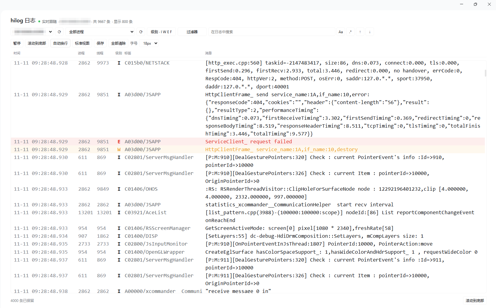

dsh-harmony
让 DeepSeek Harness 会写鸿蒙应用：plan 先想清楚，goal 盯到底，build 落到真机。



它解决的那条循环
改 ArkTS → 等编译 → 装真机 → 翻 hilog → 再改。这句循环里的每一步，都可以收进一句交代：
改完登录页的校验，跑一下真机，崩了把日志里第一条错误给我它会先 compile 做类型检查（约完整构建一半时间），再 run 构建、装包、补 HSP、拉起 Ability、抓六秒日志；崩了自动读最新 jscrash 并解出栈顶帧。
三个模式
/plan
只读调研、出方案；工具层拒绝构建与装机，批准后才动手。
/goal
跨轮目标 + 自动续跑；要求写清完成判据与验证方式，缺了会被拒绝。
build
默认状态：改文件、构建、装机、验证，一次走完。
十五个动作
| 动作 | 用途 |
|---|---|
build / compile / deps | 构建、只做类型检查、同步 ohpm 依赖 |
run | 构建 → 装机 → 补 HSP → 启动 → 抓日志，五段结论；支持 matrix 按设备分工 |
devices / deploy / logs | 设备列表（含电量温度）、装指定 HAP、抓日志并按 pid 收敛 |
screenshot / ui / app | 截图、点按输入断言、启停清数据卸载 |
crash / file / docs | 崩溃日志、设备文件收发、离线文档与 @since 查询 |
doctor / sign | 环境体检（带预算与 fix）、签名材料与证书核对 |
安装
前置：Windows、dsh >=0.2.1-rc.5、DevEco Studio 6.x、设备能被 hdc 看到。
dsh plugin --profile desktop add file:<本目录>重启一次 Harness，新建会话时选 HarmonyOS 预设。第一件事建议跑 harmony action=doctor。
它不做什么
不做预览器、断点调试、内存与性能分析——这些 DevEco 做得更好。也不做签名：hap-sign-tool 要明文密码，密码放哪由你决定。